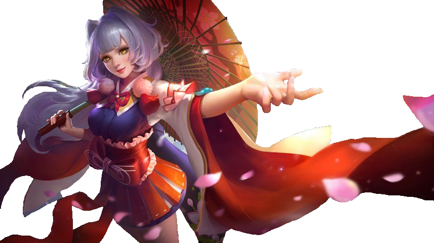
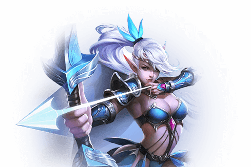
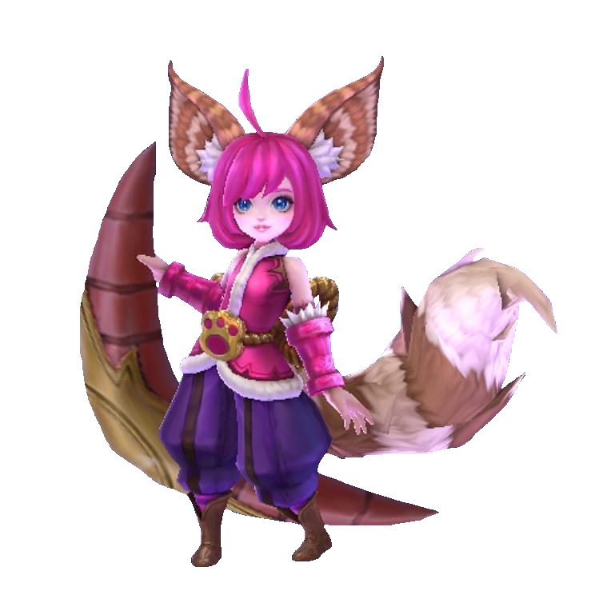
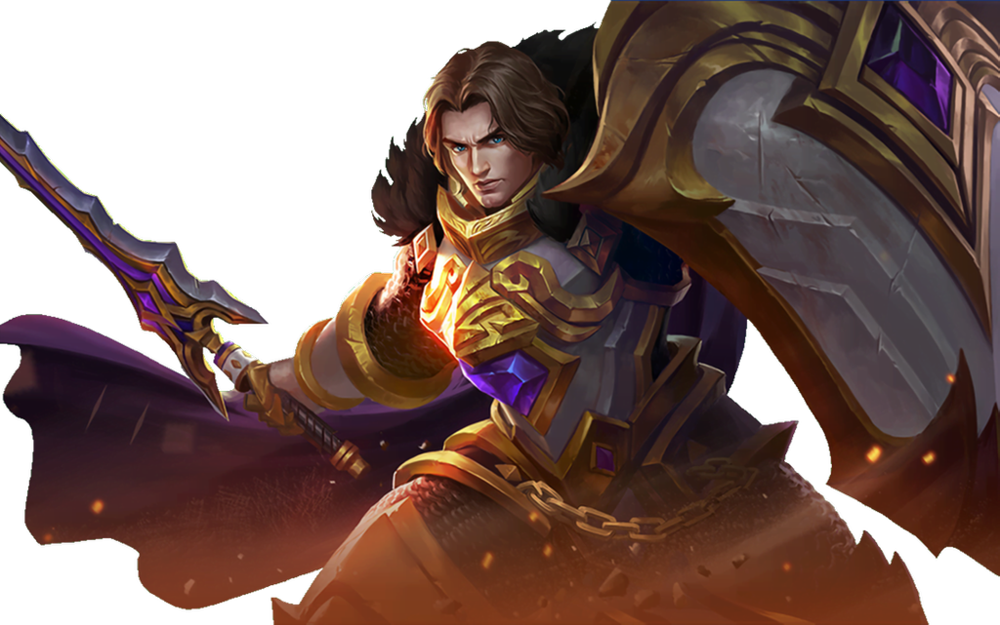

Play the greatest RPG ever to be made!
Paxley ailesi, Şafak Diyarı'ndaki en güçlü ve prestijli büyü ailelerinden biridir ve her üye en iyi düzenin büyücüsü haline gelmek üzere yetiştirilir. Onların gözünde, sihirbazın yolu orada en kutsal ve asil meslek, ve savaşta kılıcı işaretleyen herkes, sadece zayıf, karamsar aptallar. Bununla birlikte güzyon, kalıbı parçalamaya kararlıdır. Patriğin dördüncü oğlu Gusion, çok erken yaşlarda ışık elementlerine karşı yüksek bir afinite gösterdi, ancak günlerini burnunu bir kitapta gömülü olarak geçirmek yerine, Gusion ışık üzerinde kontrolünü alıştırma yapmak için hızını almak için kullanacaktı. sadece birkaç dakika içinde aile mülkü ve güçlü ışık enerjisi ile eski tören kılıç büyülü. Her zaman aile büyüklerinin inanılmayacak kadar inatçı olduğuna ve her fırsatta isteklerine karşı isyan edildiğine inanıyordu. Sonunda, Gusion'a Paxley ailesinin en önemli sınavına girme zamanı geldiğinde kendini kanıtlama şansı verildi - bir geçit ayini yetişkinliğe. Gusion'ın savaştaki kabarcıklı hızı ile rakibi pozisyonunu kilitleyemedi ve hafif şarjlı bıçağıyla, rakibinin tek bir büyü fırlatma şansı bile olmadan zafer kazandığını iddia etti. Yaşlılar inanılmaz biçim ve dövüş tekniğine hayran kaldılar, ancak fiziksel mücadeleye karşı köklü önyargıları ve geleneklere sıkı sıkıya bağlı olmaları ile Gusion'a iki seçenek verdiler: ya dövüş stilini terk etmek ya da aileden kovulmak. Bu sıkıntılarla karşı karşıya kalan ve asi olarak bağımsız olan doğasını kontrol edemeyen Gusion, aileyi terk etmeyi seçti, yakında Şafak Ülkesinin tümünün adını bilmesi ve gücünün gerçek derecesini anlaması konusunda ikna etti.
Paxley ailesi, Şafak Diyarı'ndaki en güçlü ve prestijli büyü ailelerinden biridir ve her üye en iyi düzenin büyücüsü haline gelmek üzere yetiştirilir. Onların gözünde, sihirbazın yolu orada en kutsal ve asil meslek, ve savaşta kılıcı işaretleyen herkes, sadece zayıf, karamsar aptallar. Bununla birlikte güzyon, kalıbı parçalamaya kararlıdır. Patriğin dördüncü oğlu Gusion, çok erken yaşlarda ışık elementlerine karşı yüksek bir afinite gösterdi, ancak günlerini burnunu bir kitapta gömülü olarak geçirmek yerine, Gusion ışık üzerinde kontrolünü alıştırma yapmak için hızını almak için kullanacaktı. sadece birkaç dakika içinde aile mülkü ve güçlü ışık enerjisi ile eski tören kılıç büyülü. Her zaman aile büyüklerinin inanılmayacak kadar inatçı olduğuna ve her fırsatta isteklerine karşı isyan edildiğine inanıyordu. Sonunda, Gusion'a Paxley ailesinin en önemli sınavına girme zamanı geldiğinde kendini kanıtlama şansı verildi - bir geçit ayini yetişkinliğe. Gusion'ın savaştaki kabarcıklı hızı ile rakibi pozisyonunu kilitleyemedi ve hafif şarjlı bıçağıyla, rakibinin tek bir büyü fırlatma şansı bile olmadan zafer kazandığını iddia etti. Yaşlılar inanılmaz biçim ve dövüş tekniğine hayran kaldılar, ancak fiziksel mücadeleye karşı köklü önyargıları ve geleneklere sıkı sıkıya bağlı olmaları ile Gusion'a iki seçenek verdiler: ya dövüş stilini terk etmek ya da aileden kovulmak. Bu sıkıntılarla karşı karşıya kalan ve asi olarak bağımsız olan doğasını kontrol edemeyen Gusion, aileyi terk etmeyi seçti, yakında Şafak Ülkesinin tümünün adını bilmesi ve gücünün gerçek derecesini anlaması konusunda ikna etti.
Miya Ay tapınağında doğdu ve kendini ay tanrısına sunabilecek kadar değerli olmak için çok çalıştı. Fakat insan ve ork ırkı arasında çıkan savaş, ay elflerinin yaşam alanı olan gölkenarının mehtaplı sahiplerine ulaştığında, Miya öne çıktı ve yurttaşlarına liderlik ederek yabancı işgalcilere başkaldırdılar. Ne kadar çok çaba harcamış olsalar da sayısız düşman orduları tarafından son savunmalarını yapacakları Ay Tapınağına çekilmeye zorlandırlar. Miya tapınağın ortasında diz çöküp son bir kez dua ederken insan ve ork ordularının bu kutsal yeri yok edecekleri o anda bir mucize gerçekleşti. Ay Tanrısı Miya'nın sesini duydu ve ona kulak verdi. Miya'yı kadim ve kudretli bir yay ile kutsadı. Yayını sıkıca tuttu ve bir ok attı. Bu ok yıldızların gücü tarafından kartal ruhuna dönüşerek düşman ordularını parçalara böldü. Miya yurttaşlarını tapınaktan çıkardı. Yayını her çektiğinde yıldız şeklindeki ok yağmurları düşmanların üzerine yağıyordu. Oklar kendi kendilerine uçuyormuşçasına hedeflerini buluyorlardı. İnsanlar ve orklar hızla geri çekilmeye başladılar. Miya ve yurttaşları Ay Tapınağı sahillerini geri aldılar, ve ay elfleri Miya'yı Ay Tanrısı'nın yeryüzündeki elçisi olarak tanıdılar. Miya kalbinin derinliklerinde bu sorunun kökten çözülmediğini, savaşların hiçbir zaman bitmeyeceğini biliyordu. Ay Tanrısının kutsamasıyla, bu Dünya'ya barış ve düzen getirebilecek bir krl bulabilme umuduyla Şafak Diyarına doğru uzun bir yola çıktı.
Paxley ailesi, Şafak Diyarı'ndaki en güçlü ve prestijli büyü ailelerinden biridir ve her üye en iyi düzenin büyücüsü haline gelmek üzere yetiştirilir. Onların gözünde, sihirbazın yolu orada en kutsal ve asil meslek, ve savaşta kılıcı işaretleyen herkes, sadece zayıf, karamsar aptallar. Bununla birlikte güzyon, kalıbı parçalamaya kararlıdır. Patriğin dördüncü oğlu Gusion, çok erken yaşlarda ışık elementlerine karşı yüksek bir afinite gösterdi, ancak günlerini burnunu bir kitapta gömülü olarak geçirmek yerine, Gusion ışık üzerinde kontrolünü alıştırma yapmak için hızını almak için kullanacaktı. sadece birkaç dakika içinde aile mülkü ve güçlü ışık enerjisi ile eski tören kılıç büyülü. Her zaman aile büyüklerinin inanılmayacak kadar inatçı olduğuna ve her fırsatta isteklerine karşı isyan edildiğine inanıyordu. Sonunda, Gusion'a Paxley ailesinin en önemli sınavına girme zamanı geldiğinde kendini kanıtlama şansı verildi - bir geçit ayini yetişkinliğe. Gusion'ın savaştaki kabarcıklı hızı ile rakibi pozisyonunu kilitleyemedi ve hafif şarjlı bıçağıyla, rakibinin tek bir büyü fırlatma şansı bile olmadan zafer kazandığını iddia etti. Yaşlılar inanılmaz biçim ve dövüş tekniğine hayran kaldılar, ancak fiziksel mücadeleye karşı köklü önyargıları ve geleneklere sıkı sıkıya bağlı olmaları ile Gusion'a iki seçenek verdiler: ya dövüş stilini terk etmek ya da aileden kovulmak. Bu sıkıntılarla karşı karşıya kalan ve asi olarak bağımsız olan doğasını kontrol edemeyen Gusion, aileyi terk etmeyi seçti, yakında Şafak Ülkesinin tümünün adını bilmesi ve gücünün gerçek derecesini anlaması konusunda ikna etti.
Büyük ejderhanin oğlu olan Yun Zhao Ejderhaların emriyle dünya dünya dolaşıp bilge yöneticilere yardım etmeye yemin etti.Ne zaman ki bir kralin yardıma ihtiyacı olduğunda, kral büyük ejderha tarafından bahsedilen mızrak dövüş tekniğini kullanmadan önce Yhon Zhao zaman ve mekani bir uçtan diğerine geçerek bütün engelleri ve düşmanları ortadan kaldırır.